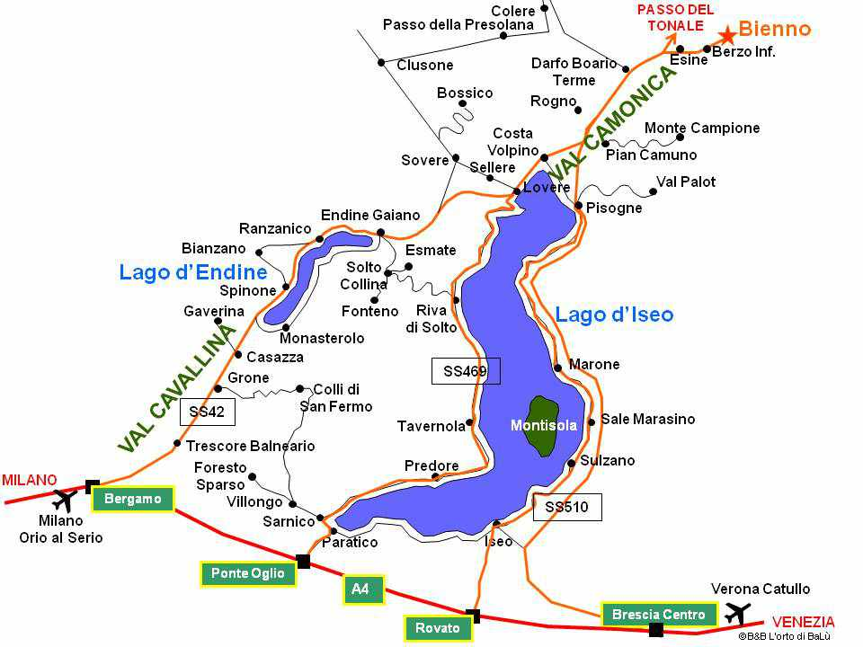

Per raggiungere la Valcamonica ci sono varie strade:
Da Iseo o Sarnico si accosta il lago Iseo e si raggiunge Pisogne
Dalla Valtellina passando l'Aprica si raggiunge Edolo
Dal Trentino Alto Adige si raggiunge la Valcamonica dal passo del Tonale
